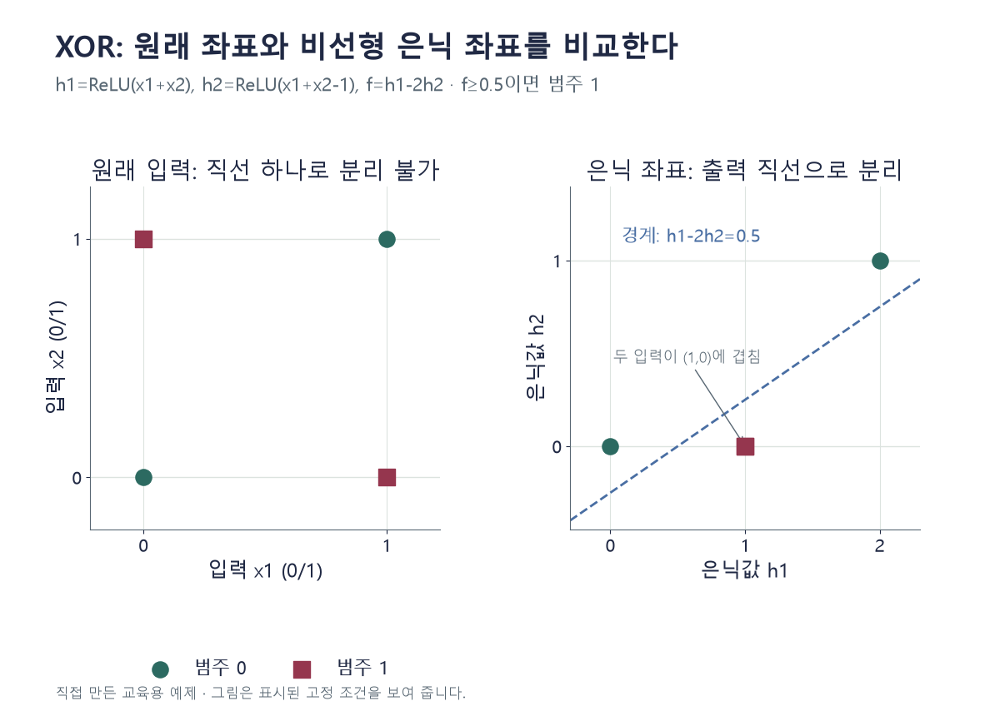

조건을 바꾸며 확인하기
문턱은 0.5 이상을1로 한다. 한 고정 가중치의 확인이며 새 자료 성능이나 최적화 성공을 측정하지 않는다.
설명 그림과 비교하기
아래 그림과 표는 고정된 설명 예제입니다. 기본·변형 중 어떤 조건인지 캡션을 읽고, 바꾼 입력의 결과는 계산 칸에서 확인하세요.

같은 문제를 직접 골라 보기
XOR 네 점을 분류한다. 은닉층과 출력층이 모두 아핀 연산이며 비선형 활성화가 없다.
조건을 더 바꾸면?
s=x₁+x₂, f=ReLU(s)−2ReLU(s−1)로 바꾸면 (1,1)의 f와 문턱 0.5에서의 범주는?
변형 풀이 확인
f=0, 범주 0.
s=2이고 2−2×1=0이다. 비선형 표현이 네 점을 구분할 수 있게 만든다.
깊이보다 먼저 중간의 비선형을 확인한다.